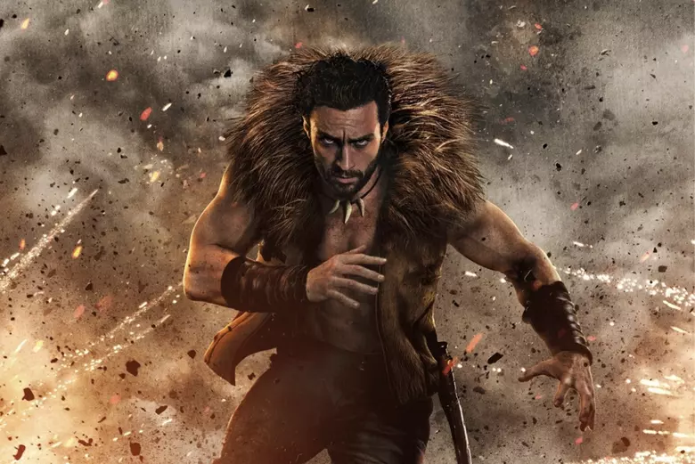

"Villains aren't born. They're made."
Kraven the Hunter is the visceral story about how and why one of Marvel’s most iconic villains came to be. Set before his notorious vendetta with Spider-Man, the film explores the complex relationship between Sergei Kravinoff and his ruthless father, Nikolai. After a life-altering encounter with a lion, Sergei gains enhanced senses and strength, embarking on a bloody mission to prove himself as the world's greatest hunter.